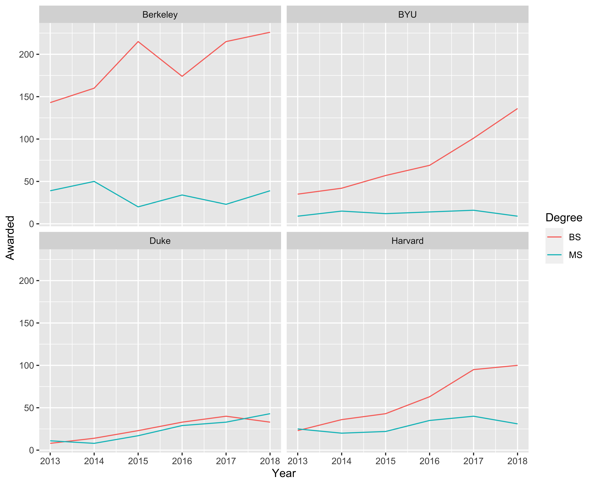
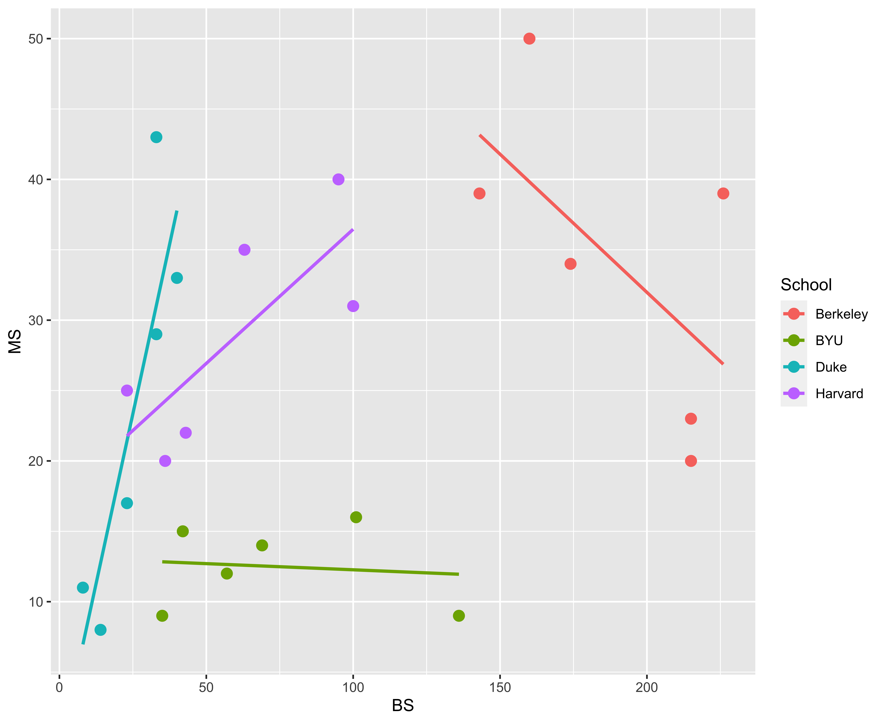
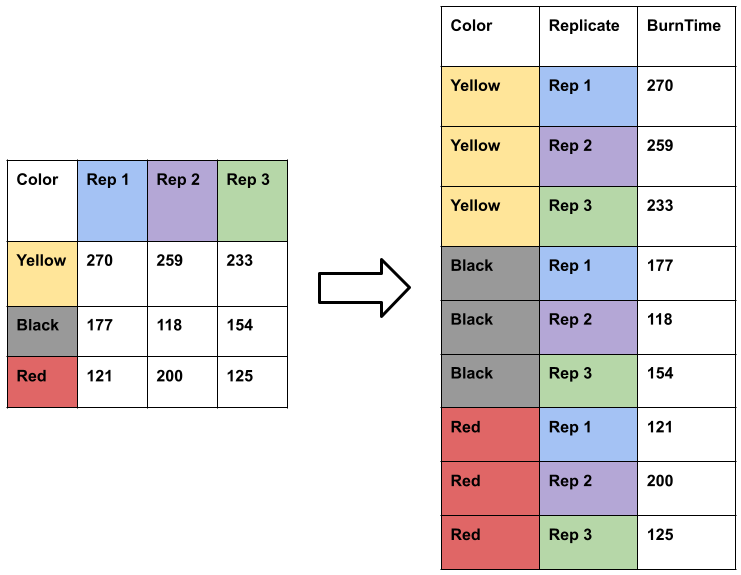
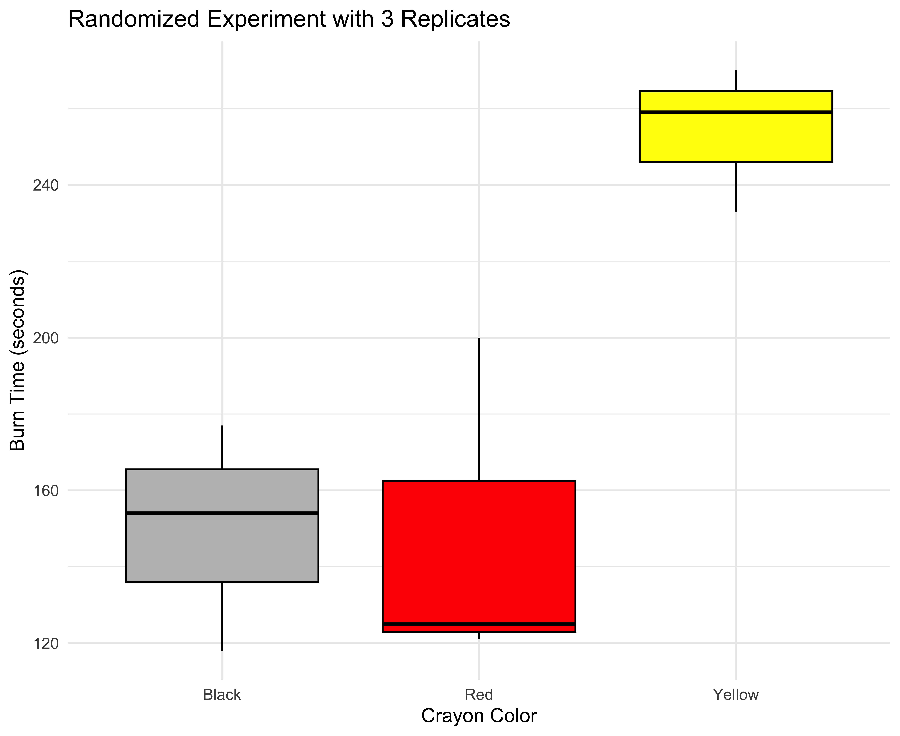

# A tibble: 3,096 × 9
buyer price units acres sqft condition covpkg age region
<chr> <dbl> <dbl> <dbl> <dbl> <chr> <dbl> <dbl> <chr>
1 Out 3350000 200 7.39 127400 Average 190 20 NWCities
2 AZ 310000 12 0.713 9600 Average 12 49 CentPhoenix
3 Out 5245549 184 9.2 114457 Average 184 21 CentPhoenix
4 AZ 262500 23 0.33 10212 Average 0 21 CentPhoenix
5 AZ 775000 16 1.34 16800 Fair NA 15 Chandler
6 Out 21000000 330 13.9 292054 Good 330 13 Scottsdale
7 AZ 350000 34 2.12 29940 Average 0 4 NWCities
8 AZ 201000 8 0.397 5568 Average 0 37 Scottsdale
9 Out 3700000 166 6.82 168990 Fair 80 23 NPhoenix
10 Out 1025000 60 2.23 45900 Good 0 4 NPhoenix
# ℹ 3,086 more rowsTidy Data
BYU STAT 250
Dr. Scott D. Grimshaw
Announcements
Recap of last lecture
Data over time (Time Series Plot)
A single variable measured at regular time intervals
Working with dates and times
R details (data types)
Outline
Tidy Data
Tidy Data Rules
What does untidy data look like?
What needs to be done to tidy it
Tidy Data
The same underlying data can be represented multiple ways.
Tidy Data Rules:
Each variable must have its own column
Each observation must have its own row
Each value must have its own cell

Tidy Data Example
Is there a difference between local buyers and out-of-state buyers after adjusting for factors that impact price?
Model with response variable (price) and other columns as explanatory variables
Each row is a transaction
Tidy Data Example
# A tibble: 3,096 × 9
buyer price units acres sqft condition covpkg age region
<chr> <dbl> <dbl> <dbl> <dbl> <chr> <dbl> <dbl> <chr>
1 Out 3350000 200 7.39 127400 Average 190 20 NWCities
2 AZ 310000 12 0.713 9600 Average 12 49 CentPhoenix
3 Out 5245549 184 9.2 114457 Average 184 21 CentPhoenix
4 AZ 262500 23 0.33 10212 Average 0 21 CentPhoenix
5 AZ 775000 16 1.34 16800 Fair NA 15 Chandler
6 Out 21000000 330 13.9 292054 Good 330 13 Scottsdale
7 AZ 350000 34 2.12 29940 Average 0 4 NWCities
8 AZ 201000 8 0.397 5568 Average 0 37 Scottsdale
9 Out 3700000 166 6.82 168990 Fair 80 23 NPhoenix
10 Out 1025000 60 2.23 45900 Good 0 4 NPhoenix
# ℹ 3,086 more rowsTidy Data Rules:
Each variable must have its own column
Each observation must have its own row
Each value must have its own cell
Why tidy?
Be consistent in data structure
Assumed structure for most R functions because statisticians work with dataset
graph the histogram of a column of a
datasetcreate scatterplot of two columns of a
datasetlook at the first few rows of a
dataset
Connects to matrix view of data used in statistical modeling
Untidy Data
Happy families are all alike; every unhappy family is unhappy in its own way.
Leo Tolstoy
It’s too simple to judge all not tidy data as bad / wrong.
There is usually a reason someone chose a data structure, and maybe it wasn’t “How can I help my statistician / data scientist get quickly started on the analysis?”
Who will take the untidy data and make it tidy? You!
Untidy Data Example
Statistics Degrees Awarded (Degree Type over Time)
# A tibble: 3 × 8
degree `1987` `1992` `1997` `2002` `2007` `2012` `2017`
<chr> <dbl> <dbl> <dbl> <dbl> <dbl> <dbl> <dbl>
1 BS 463 554 365 454 610 1345 3362
2 MS 575 751 795 908 1420 2026 3366
3 PhD 114 170 187 177 300 345 419What were they thinking?
Assign Degree Type to Rows, Time to Columns to make a pretty table
Not tidy because row is all years
(Need one degree type and year per row)
# A tibble: 21 × 3
degree year awarded
<chr> <dbl> <dbl>
1 BS 1987 463
2 BS 1992 554
3 BS 1997 365
4 BS 2002 454
5 BS 2007 610
6 BS 2012 1345
7 BS 2017 3362
8 MS 1987 575
9 MS 1992 751
10 MS 1997 795
11 MS 2002 908
# ℹ 10 more rowsUntidy Data Example
Statistics Degrees Awarded (Gender by Type over Time)
Women
# A tibble: 3 × 8
degree `1987` `1992` `1997` `2002` `2007` `2012` `2017`
<chr> <dbl> <dbl> <dbl> <dbl> <dbl> <dbl> <dbl>
1 BS 197 258 164 196 256 564 1444
2 MS 232 294 380 435 678 955 1639
3 PhD 30 41 57 66 123 120 144Men
# A tibble: 3 × 8
degree `1987` `1992` `1997` `2002` `2007` `2012` `2017`
<chr> <dbl> <dbl> <dbl> <dbl> <dbl> <dbl> <dbl>
1 BS 266 296 201 258 354 781 1918
2 MS 343 457 415 473 742 1071 1727
3 PhD 84 129 130 111 177 225 275What were they thinking?
Take last pretty table, and make two tables for gender
Not tidy because two datasets
(Need one dataset with one gender and one degree type and year per row)
# A tibble: 42 × 4
gender degree year awarded
<chr> <chr> <chr> <dbl>
1 women BS 1987 197
2 men BS 1987 266
3 women MS 1987 232
4 men MS 1987 343
5 women PhD 1987 30
6 men PhD 1987 84
7 women BS 1992 258
8 men BS 1992 296
9 women MS 1992 294
10 men MS 1992 457
11 women PhD 1992 41
12 men PhD 1992 129
13 women BS 1997 164
14 men BS 1997 201
15 women MS 1997 380
# ℹ 27 more rowsUntidy Data Example
BYU Statistics Classes (Capacity / Enrollment by Class Type over Time)
# A tibble: 12 × 6
Course Type Year Fall Winter Spring
<chr> <chr> <dbl> <dbl> <dbl> <dbl>
1 Stat230 Capacity 2021 150 136 40
2 Stat230 Enrollment 2021 102 95 29
3 Stat230 Capacity 2022 125 140 50
4 Stat230 Enrollment 2022 99 83 16
5 Stat240 Capacity 2021 158 135 0
6 Stat240 Enrollment 2021 147 103 0
7 Stat240 Capacity 2022 130 135 50
8 Stat240 Enrollment 2022 102 75 14
# ℹ 4 more rowsWhat were they thinking?
Assign Semester to Columns instead of Capacity / Enrollment because there are more of them
Not tidy because an observation is really two rows
(Need one class and semester per row)
# A tibble: 18 × 5
Course Year Semester Capacity Enrollment
<chr> <dbl> <chr> <dbl> <dbl>
1 Stat230 2021 Fall 150 102
2 Stat230 2021 Winter 136 95
3 Stat230 2021 Spring 40 29
4 Stat230 2022 Fall 125 99
5 Stat230 2022 Winter 140 83
6 Stat230 2022 Spring 50 16
7 Stat240 2021 Fall 158 147
8 Stat240 2021 Winter 135 103
9 Stat240 2021 Spring 0 0
10 Stat240 2022 Fall 130 102
11 Stat240 2022 Winter 135 75
12 Stat240 2022 Spring 50 14
13 Stat250 2021 Fall 100 84
14 Stat250 2021 Winter 105 98
15 Stat250 2021 Spring 0 0
16 Stat250 2022 Fall 101 91
17 Stat250 2022 Winter 130 65
18 Stat250 2022 Spring 0 0Untidy Data Example
Point by Point Volleyball Data
{"id":["5b76cb1ee4b0dda432a312fc"],
"portalMatchId":[64715],
"scoresheetId":["5b83d257e4b0038b53d3f11b"],
"encodedVideoUrl":["http://vm-transcoded-videos.s3.amazonaws.com/2018.08.17-20.51-64715.mp4"],
"lastUpdated":["2018-12-19T10:34:46"],
"homeTeamId":[174],
"awayTeamId":[261],
"duration":[7552196],
"sets":[{
"homeScore":{},
"awayScore":{},
"setNum":{},
"rallies":[{
"homeScore":[0],
"awayScore":[0],
"homeSetterRotation":[6],
"awaySetterRotation":[5],
"events":[{
"id":["cb608e5a-8676-4fb4-a1d4-aabb6f30fbeb"],
"type":{
"description":["serve"],
"details":{
"nearSideTeamId":["174"],
"onCourtHome":["[{
\"id\":null,
\"teamId\":174,
\"portalPlayerId\":-225255,
\"number\":10,
\"name\":\"Tiana Gleason\",
\"originalPosition\":\"Setter\",
\"zone\":\"BR\"
},# A tibble: 42 × 4
HomePts AwayPts HomeRotation AwayRotation
<int> <int> <int> <int>
1 0 0 6 5
2 1 0 6 5
3 1 1 6 6
4 2 1 1 6
5 3 1 1 6
6 4 1 1 6
7 5 1 1 6
8 6 1 1 6
9 6 2 1 1
10 7 2 2 1
11 7 3 2 2
12 7 4 2 2
13 7 5 2 2
14 7 6 2 2
15 7 7 2 2
16 7 8 2 2
17 8 8 3 2
18 9 8 3 2
19 10 8 3 2
20 11 8 3 2
21 11 9 3 3
22 11 10 3 3
23 12 10 4 3
24 13 10 4 3
25 13 11 4 4
26 14 11 5 4
27 14 12 5 5
28 15 12 6 5
29 16 12 6 5
30 16 13 6 6
31 16 14 6 6
32 16 15 6 6
33 17 15 1 6
34 18 15 1 6
35 19 15 1 6
36 19 16 1 1
37 20 16 2 1
38 21 16 2 1
39 22 16 2 1
40 22 17 2 2
41 23 17 3 2
42 24 17 3 2Don’t be Black / White about Tidy
Statistics Degrees Awarded (Top Schools by Type over Time)
# A tibble: 48 × 4
School Year Degree Awarded
<chr> <dbl> <chr> <dbl>
1 Berkeley 2013 BS 143
2 Berkeley 2014 BS 160
3 Berkeley 2015 BS 215
4 Berkeley 2016 BS 174
5 Berkeley 2017 BS 215
6 Berkeley 2018 BS 226
7 Berkeley 2013 MS 39
8 Berkeley 2014 MS 50
9 Berkeley 2015 MS 20
10 Berkeley 2016 MS 34
11 Berkeley 2017 MS 23
12 Berkeley 2018 MS 39
13 BYU 2013 BS 35
14 BYU 2014 BS 42
15 BYU 2015 BS 57
16 BYU 2016 BS 69
17 BYU 2017 BS 101
18 BYU 2018 BS 136
# ℹ 30 more rows
# A tibble: 24 × 4
School Year BS MS
<chr> <dbl> <dbl> <dbl>
1 Berkeley 2013 143 39
2 Berkeley 2014 160 50
3 Berkeley 2015 215 20
4 Berkeley 2016 174 34
5 Berkeley 2017 215 23
6 Berkeley 2018 226 39
7 BYU 2013 35 9
8 BYU 2014 42 15
9 BYU 2015 57 12
10 BYU 2016 69 14
11 BYU 2017 101 16
12 BYU 2018 136 9
13 Duke 2013 8 11
14 Duke 2014 14 8
15 Duke 2015 23 17
16 Duke 2016 33 29
17 Duke 2017 40 33
18 Duke 2018 33 43
# ℹ 6 more rows
Reshaping Datasets
Reshaping Datasets
Wide to Long
One Factor Experiment
Factor: Crayon Color
Response: Burn Time

pivot_longer()
Untidy
# A tibble: 3 × 4
Color Rep1 Rep2 Rep3
<chr> <dbl> <dbl> <dbl>
1 Yellow 270 259 233
2 Black 177 118 154
3 Red 121 200 125Tidy
crayon |>
pivot_longer(
cols = c(Rep1, Rep2, Rep3),
names_to = "Replicate",
values_to = "BurnTime"
)# A tibble: 9 × 3
Color Replicate BurnTime
<chr> <chr> <dbl>
1 Yellow Rep1 270
2 Yellow Rep2 259
3 Yellow Rep3 233
4 Black Rep1 177
5 Black Rep2 118
6 Black Rep3 154
7 Red Rep1 121
8 Red Rep2 200
9 Red Rep3 125Visualize

crayon |>
pivot_longer(
cols = c(Rep1, Rep2, Rep3),
names_to = "Replicate",
values_to = "BurnTime"
) |>
ggplot(aes(x = Color, y = BurnTime)) +
geom_boxplot(color="black",
fill=c("gray", "red", "yellow")) +
labs(
x = "Crayon Color",
y = "Burn Time (seconds)",
title = "Randomized Experiment with 3 Replicates"
) +
theme_minimal()Details
Shorthand for many columns (starts_with("Rep"))
Clever code for patterns in many column names
The opposite operation uses pivot_wider
Lecture Review
Tidy Data Rules
Recognizing Untidy Data
What needs to be done to tidy it